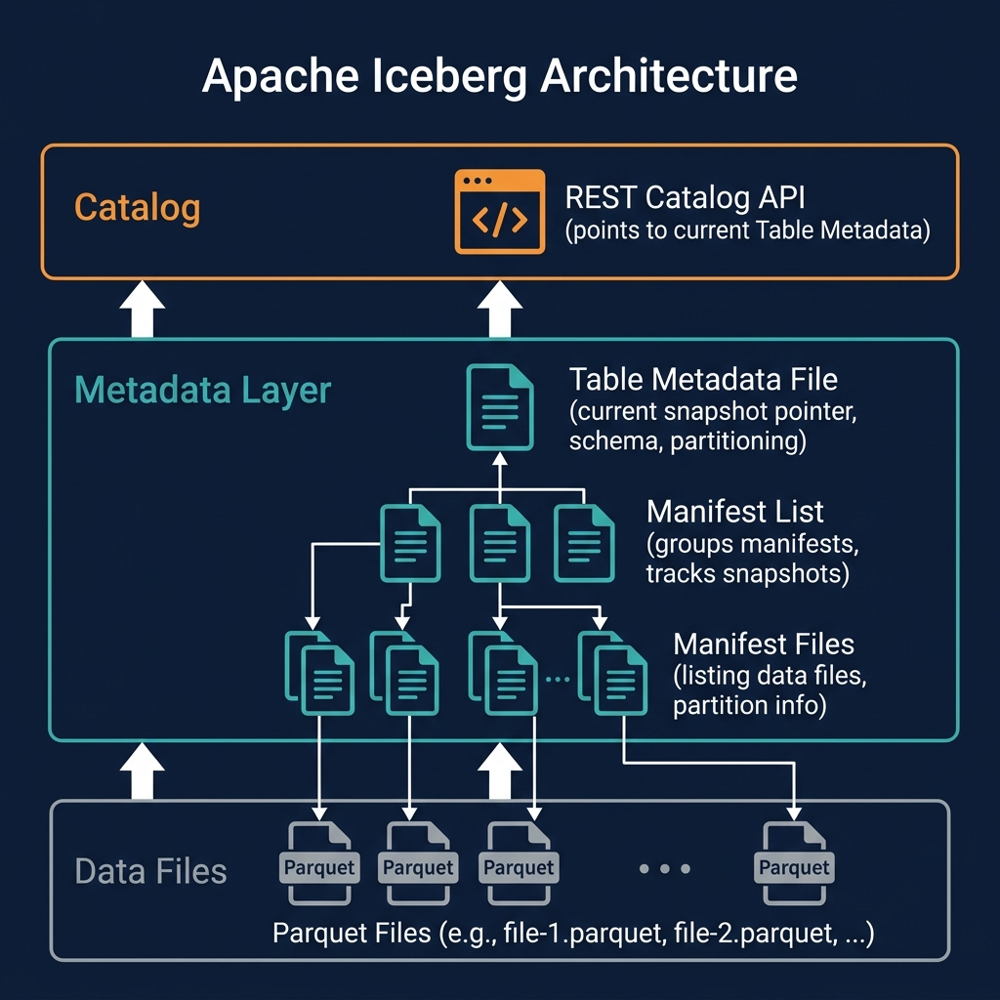
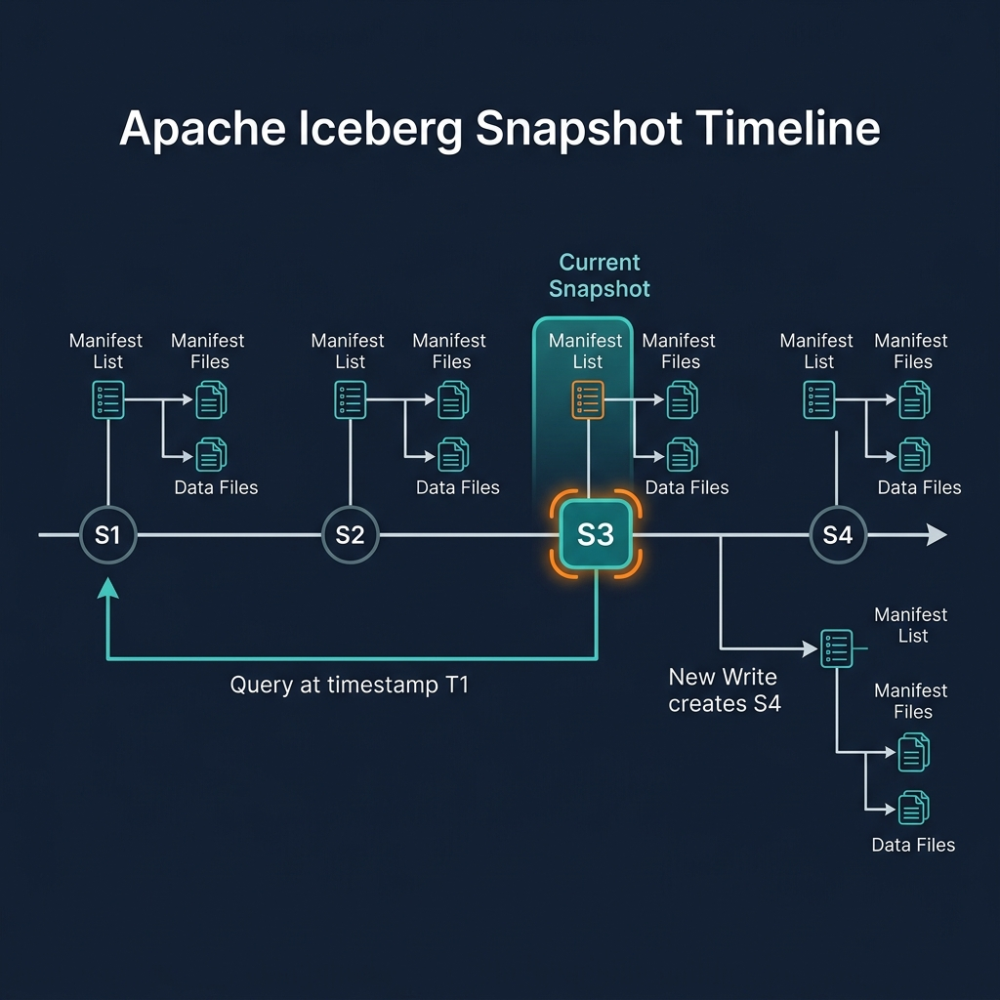

What Is Hidden Partitioning?
Hidden partitioning is Apache Iceberg's approach to data partitioning that separates the physical storage organization from the logical query interface. In traditional Hive-style partitioned tables, users must explicitly filter on partition columns to trigger partition pruning — for example, filtering on a synthetic partition_date column rather than the actual event_time timestamp. If a user forgets to include the partition column filter, the engine scans all partitions — an expensive full table scan.
Iceberg eliminates this requirement. When a table is partitioned by days(event_time), users simply write WHERE event_time > '2026-01-01' — filtering on the actual data column. Iceberg's query planner applies the days() transform to the filter predicate and uses the result to prune partition files automatically. The user never needs to know that the table is partitioned by day, what the partition column is named, or how the transform is applied.
This transparency is called 'hidden' partitioning because the partition organization is hidden from the query writer — it exists in the metadata and is used for pruning, but it is not exposed as a visible, queryable column in the table's schema.
Partition Transforms
Hidden partitioning is powered by partition transforms — functions that derive a partition value from a data column value:
- identity(col): Use the column value directly. Equivalent to Hive partitioning. Best for low-cardinality columns like
region,status. - days(col), hours(col), months(col), years(col): Extract a time unit from a timestamp. The most common transforms for time-series event data.
- bucket(N, col): Hash the column value and assign to one of N buckets. Used for high-cardinality columns (user_id, product_id) to distribute data evenly without creating millions of tiny partitions.
- truncate(W, col): Use the first W characters of a string (or W-aligned integer). Useful for prefix partitioning of categorical string columns.
These transforms are applied by Iceberg at write time to derive partition values and at query time to translate filter predicates into partition pruning expressions. The transform is recorded in the table's partition spec — part of the Iceberg metadata — not in the data files themselves.

Hive Partitioning vs Hidden Partitioning
The contrast with Hive-style partitioning illustrates why hidden partitioning is a significant usability and correctness improvement:
| Aspect | Hive-Style Partitioning | Iceberg Hidden Partitioning |
|---|---|---|
| Partition columns | Explicit, separate columns in schema | Derived from data columns via transforms |
| User query requirement | Must filter on partition column for pruning | Filter on data column — pruning is automatic |
| Accidental full scans | Common (forgot partition filter) | Impossible (pruning from data column filters) |
| Partition evolution | Requires full rewrite | Metadata-only via partition evolution |
| Schema cleanliness | Synthetic partition columns pollute schema | Schema reflects only real data columns |
Hidden Partitioning and Partition Evolution
Hidden partitioning and partition evolution work together to create a system that is both flexible and transparent. When partition evolution changes the active partition spec — from days(event_time) to hours(event_time) — users' existing queries are completely unaffected. They continue to write WHERE event_time > '2026-01-01 12:00:00', and Iceberg applies the appropriate pruning for each file group: day-level pruning for old files, hour-level pruning for new files. The evolution is entirely invisible to query writers.
Hidden Partitioning in Practice: Examples
Examples of common hidden partitioning configurations and their query behavior:
Daily Event Table
Partition spec: days(event_timestamp). User query: SELECT count(*) FROM events WHERE event_timestamp BETWEEN '2026-01-01' AND '2026-01-31'. Pruning result: Only January data files are read — 31 daily partitions. No January partition column in the schema.
User Activity Table with Bucket Partitioning
Partition spec: bucket(256, user_id). User query: SELECT * FROM user_activity WHERE user_id = 'abc123'. Pruning result: Iceberg hashes 'abc123', identifies the relevant bucket (e.g., bucket 47), reads only that bucket's files. One out of 256 files read.
Multi-Field Partitioning
Partition spec: months(order_date), identity(region). User query: SELECT sum(revenue) FROM orders WHERE order_date >= '2026-01-01' AND region = 'EMEA'. Pruning: Only 2026 monthly partitions for EMEA region are read.
Hidden Partitioning with Dremio
Dremio fully implements Iceberg's hidden partitioning model. When users query Iceberg tables through Dremio, the query planner automatically translates WHERE clause predicates into partition pruning expressions based on the table's partition spec. Users never need to know the partition scheme to benefit from pruning.
Dremio's query planner also handles multi-spec tables correctly — applying the appropriate pruning transform for each file group based on the partition spec under which each file was written. This makes tables that have undergone partition evolution fully efficient in Dremio without any user awareness.
Creating a hidden-partitioned Iceberg table in Dremio: CREATE TABLE events (event_id BIGINT, event_time TIMESTAMP, region VARCHAR) PARTITION BY (days(event_time), identity(region)). The partition columns days(event_time) and region are not visible in the table schema — they are used only internally for file organization.
Best Practices for Hidden Partitioning
Effective hidden partitioning requires choosing transforms that align with dominant query patterns:
- Time-series data: Use
hours()for high-frequency data (millions of events/day) anddays()for lower-frequency data.months()is rarely the right choice for query performance — monthly partitions are usually too large for efficient pruning. - User or entity data: Use
bucket(N, entity_id)where N is sized so each bucket contains 128MB–512MB of data. Bucket partitioning enables efficient point lookups and join optimizations. - Categorical data: Use
identity(category_col)only for columns with fewer than 1000 distinct values. Higher cardinality creates too many small partitions. - Monitor partition sizes: Use Iceberg's metadata queries (
SELECT * FROM table.files) to inspect per-partition file counts and sizes. Adjust partition granularity via partition evolution if partitions become too large or too small.
Summary
Hidden partitioning is one of the most user-friendly features in Apache Iceberg. By applying partition transforms automatically and making partition organization invisible to query writers, Iceberg eliminates the most common source of accidental full table scans in traditional Hive-partitioned data lakes — forgotten partition column filters.
Combined with partition evolution, hidden partitioning creates a completely transparent partitioning system: data teams can change partition schemes freely as data volumes and query patterns evolve, without requiring any query changes from downstream users. This flexibility is a core advantage of the data lakehouse over traditional partitioned data lakes.